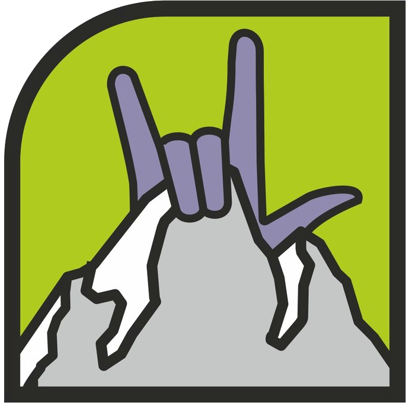

5 концепций — от эволюции текущего лого до смелых переработок. Все сохраняют гору и руку из оригинала, все используют лаймовый акцент.

Силуэт горы + жест «коза» (rock-hand). Тяжёлый контур, мелкие детали плохо читаются в маленьком размере. Нет цветового акцента, нет ассоциации с детьми.
Тот же силуэт горы + жест «коза», но в плоском современном стиле. Убран тяжёлый контур, добавлен лаймовый градиент. Рука на вершине — как флаг покорителя.
Стилизованная рука цепляется за пик горы — жест скалолаза в момент хвата. Лаймовая точка на месте контакта — метафора зацепа. Динамично, но без лишних деталей.
Два силуэта на горе: взрослый наверху тянет руку вниз, ребёнок внизу тянет руку вверх. Лаймовые руки + искра в точке контакта. «Держи» обретает двойной смысл: «держи высоту» + «держи меня».
Гора усеяна зацепами — круглыми точками, как на реальной скалодромной стене. На вершине — силуэт поднятой «козы» (отсылка к оригиналу). Гора = скалодром буквально.
Фигурка на пике горы с поднятыми руками — победная поза. Лаймовое свечение за вершиной. Максимально энергичная, про драйв и достижение. «Высоту» держат — значит дошли до вершины.